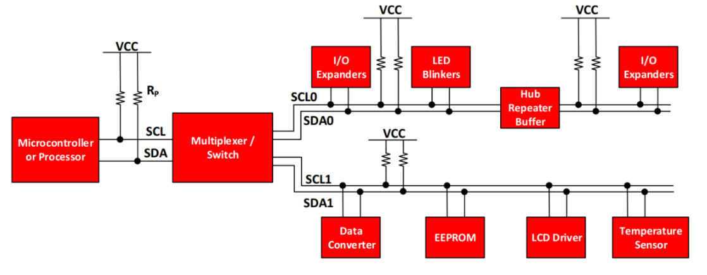
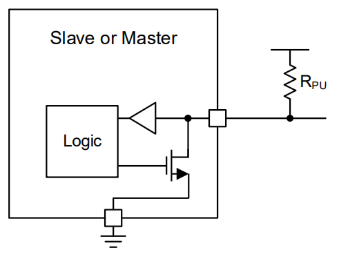
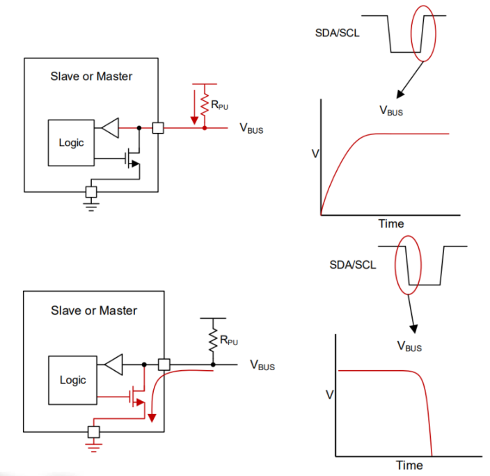
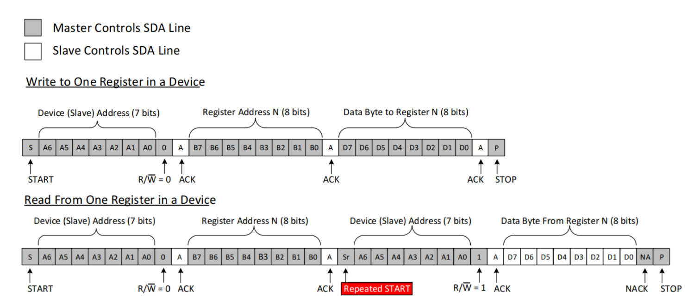

I2C (Inter-Integrated Circuit)
Introduction
What is I2C?
- Two-line synchronous serial bus:
- SCL (clock) and SDA (data).
- Multi-device architecture over the same pair of wires.
- Master ↔ slave communication (in practice: controller ↔ target).
- Each target has an address (7 or 10 bits) on the bus.
When is I²C a good choice?
- Connecting many peripherals with few pins.
- Typical devices: sensors (temperature, IMU), ADC/DAC, GPIO expanders, displays (OLED), EEPROM.
- Modest speeds: 100 kbps (Standard), 400 kbps (Fast), 1 Mbps (Fm+), 3.4 Mbps (Hs). (For higher throughput or point-to-point links, SPI is usually better; for text/terminals, UART.)
Hardware


Where \(V_{oL}(max)\) is the maximum voltage the device guarantees at LOW (usually 0.4 V) and \(I_{oL}\) is the current the device can sink at LOW (usually 3 mA). $$ R_p(min)= \frac{3.3V-0.4V}{3mA}=966.67 \Omega $$

$$ R_p(max)= \frac{t_r}{0.8473 \cdot C_b} $$ Where \(t_r\) is the maximum allowed rise time (1000 ns for 100 kHz, 300 ns for 400 kHz, 120 ns for 1 MHz) and \(C_b\) is the total bus capacitance (including wires, PCB, and devices).
We typically use the following values:
- 100 kHz: 4.7 kΩ, and up to 10 kΩ can work.
- 400 kHz: 2.2–4.7 kΩ.
- 1 MHz (Fm+): 1–2.2 kΩ.
I2C pins on the Raspberry Pi Pico 2
I2C0 - SDA pins: GP0, GP4, GP8, GP12, GP16, GP20 - SCL pins: GP1, GP5, GP9, GP13, GP17, GP21
I2C1 - SDA pins: GP2, GP6, GP10, GP14, GP18, GP26 - SCL pins: GP3, GP7, GP11, GP15, GP19, GP27
Protocol
Message format

START: SDA falls (HIGH→LOW) while SCL is HIGH; beginning of the transaction (master).Address + R/W: Byte with the address (7 bits) + R/W bit; selects the slave and direction (master).ACK/NACK: Acknowledge bit after each byte; given by the receiver (slave on write, master on read).DATA: Bytes MSB→LSB; on write the master sends them, on read the slave sends them.REPEATED START (Sr): A new START without a prior STOP; chains operations without releasing the bus (master).STOP: SDA rises (LOW→HIGH) while SCL is HIGH; end of the transaction, releases the bus (master).
Common sequences

I2C API in the Raspberry Pi Pico SDK
i2c_init(i2c, baudrate)initializes the I²C peripheral and sets the speed, where:i2cis the pointer to the instance (i2c0ori2c1).baudrateis the target speed in Hz (e.g.,100000,400000).- Returns:
uintwith the speed actually applied.
i2c_deinit(i2c)shuts down/disables the I²C peripheral, where:i2cis the instance (i2c0ori2c1).- Returns: nothing.
i2c_set_baudrate(i2c, baudrate)changes the speed on the fly, where:i2cis the instance.baudrateis the new speed in Hz.- Returns:
uintwith the speed actually applied.
i2c_write_blocking(i2c, addr, src, len, nostop)sends bytes to the slave (blocking), where:i2cis the instance.addris the slave's 7-bit address (e.g.,0x8A).srcis a pointer to the memory holding the data to transmit.lenis the number of bytes to send fromsrc.nostopiftruedoes not issue STOP (prepares a REPEATED START); iffalseit does issue STOP.- Returns:
intwith bytes written (should belen) or <0 on error (NACK/timeout).
i2c_read_blocking(i2c, addr, dst, len, nostop)reads bytes from the slave (blocking), where:i2cis the instance.addris the slave's 7-bit address.dstis a pointer to the destination memory for the read data.lenis the number of bytes to read intodst.nostopiftruedoes not issue STOP at the end; iffalseit issues STOP (the hardware NACKs the last byte).- Returns:
intwith bytes read (should belen) or <0 on error.
i2c_write_timeout_us(i2c, addr, src, len, nostop, timeout_us)same asi2c_write_blockingbut with a timeout, where:timeout_usis the maximum time in microseconds.- Returns: bytes written,
PICO_ERROR_TIMEOUTif it expires, or <0 on other errors.
i2c_read_timeout_us(i2c, addr, dst, len, nostop, timeout_us)same asi2c_read_blockingbut with a timeout, where:timeout_usis the maximum time in microseconds.- Returns: bytes read,
PICO_ERROR_TIMEOUTif it expires, or <0 on other errors.
CMakeLists.txt
To use I2C you must add the hardware_i2c library to your project's CMakeLists.txt:
Basic write example
Following this transaction:
STARTbeginning of communicationAddress + W → ACK (slave)I indicate who I'm going to talk toData (register) → ACK (slave)I indicate where I want to write the valueData (value) → ACK (slave)I indicate which value I want to writeSTOPend of communication
#include <stdio.h>
#include "pico/stdlib.h"
#include "hardware/i2c.h"
#define I2C_PORT i2c0
#define SDA_PIN 4
#define SCL_PIN 5
#define ADDR 0x8A // 7-bit address of the slave device
int main(void) {
stdio_init_all();
// Initialize i2c at a speed of 100 kHz
i2c_init(I2C_PORT, 100000);
// Configure the pins to work as i2c
gpio_set_function(SDA_PIN, GPIO_FUNC_I2C);
gpio_set_function(SCL_PIN, GPIO_FUNC_I2C);
// Enable internal pull-ups on the pins
gpio_pull_up(SDA_PIN);
gpio_pull_up(SCL_PIN);
sleep_ms(500);
uint8_t reg = 0x00; // Register to write
uint8_t value = 0x67; // Value to write
uint8_t value2 = 0x42; // Value to write
uint8_t memory[3];
while (true) {
memory[0] = reg;
memory[1] = value;
memory[2] = value2;
/*OPTION 1: ALL AT ONCE*/
// START + addr|W + WRITE(reg) + ACK
int w = i2c_write_blocking(I2C_PORT, ADDR, memory, sizeof(memory), /*nostop=*/false);
if (w < 0) {
printf("I2C error (ret=%d)\n", w);
} else if (w != (int)sizeof(memory)) {
printf("Partial write: %d/%d bytes\n", w, (int)sizeof(memory));
} else {
printf("Written successfully\n");
}
sleep_ms(1000);
}
return 0;
}
Basic read example
STARTbeginning of communicationAddress + W → ACK (slave)I indicate who I'm going to talk to, in write modeData (register) → ACK (slave)I write where I want to read fromREPEATED STARTI restart the communicationAddress + R → ACK (slave)I indicate who I'm going to talk to, but in read modeData byte(s) → ACK (master)I read the requested byte(s)Last Data → NACK (master)I signal that this is the last byte I'm going to readSTOP
#include <stdio.h>
#include "pico/stdlib.h"
#include "hardware/i2c.h"
#define I2C_PORT i2c0
#define SDA_PIN 4
#define SCL_PIN 5
#define ADDR 0x2A // 7-bit address of the slave device
int main(void) {
stdio_init_all();
// Initialize i2c at a speed of 100 kHz
i2c_init(I2C_PORT, 100000);
// Configure the pins to work as i2c
gpio_set_function(SDA_PIN, GPIO_FUNC_I2C);
gpio_set_function(SCL_PIN, GPIO_FUNC_I2C);
// Enable internal pull-ups on the pins
gpio_pull_up(SDA_PIN);
gpio_pull_up(SCL_PIN);
sleep_ms(500);
uint8_t reg = 0x00; // Register to read
uint8_t memory[3]; // We'll read 3 bytes
while (true) {
// START + addr|W + WRITE(reg) + ACK + NoStop
int w = i2c_write_blocking(I2C_PORT, ADDR, ®, 1, /*nostop=*/true);
if (w < 0) {
printf("I2C error (ret=%d)\n", w);
goto next;
} else if (w != 1) {
printf("Partial write: %d/1 bytes\n", w);
goto next;
} else {
printf("Written successfully\n");
}
// REPEATED START + addr|R + READ(data) + NACK + STOP
int r = i2c_read_blocking(I2C_PORT, ADDR, memory, sizeof(memory), /*nostop=*/false);
if (r < 0) {
printf("I2C error (ret=%d)\n", r);
} else if (r != (int)sizeof(memory)) {
printf("Partial read: %d/%d bytes\n", r, (int)sizeof(memory));
printf("Data read: ");
for (int i = 0; i < r; i++) {
printf("0x%02X ", memory[i]);
}
} else {
printf("Read successfully\n");
printf("Data read: \n");
for (int i = 0; i < (int)sizeof(memory); i++) {
printf("0x%02X \n", memory[i]);
}
}
next:
sleep_ms(1000);
}
return 0;
}